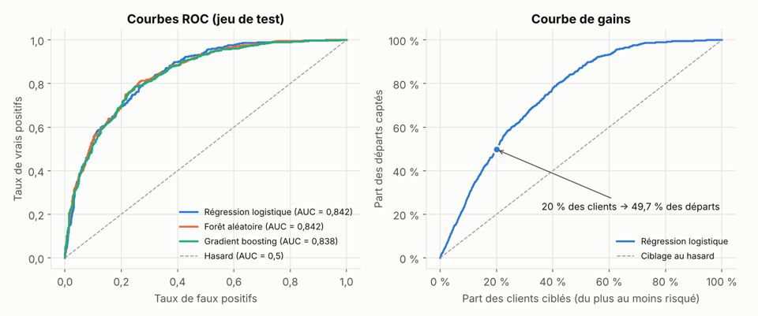
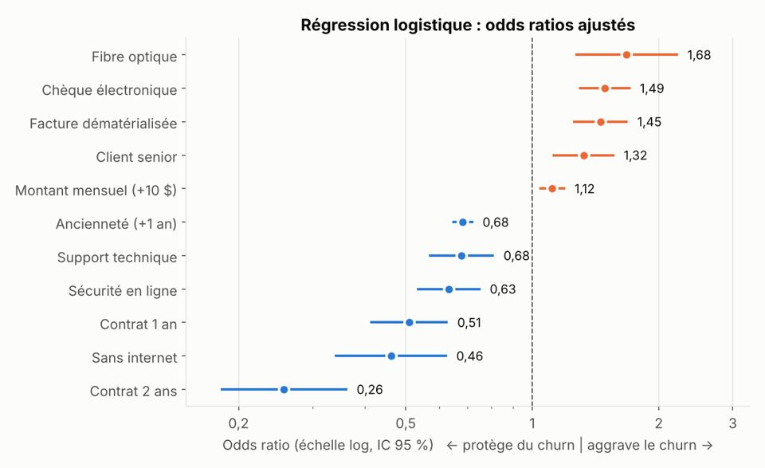

Points clés
- Tests du khi-deux, V de Cramér, intervalles de Wilson, test de Mann-Whitney
- Régression logistique interprétable (odds ratios et intervalles de confiance)
- Comparaison de 3 modèles en validation croisée : ROC-AUC 0,846 ± 0,013
- Courbe de gains : 20 % des clients ciblés captent environ 50 % des départs
- Pipeline Dataiku DSS et reproduction en Python (scikit-learn, statsmodels)
Aperçu


Auteur
Teede Augustin NOUDAMADJO, Data Scientist Junior à Lyon. Retrouvez la documentation complète, le code et la vidéo de démonstration sur GitHub.